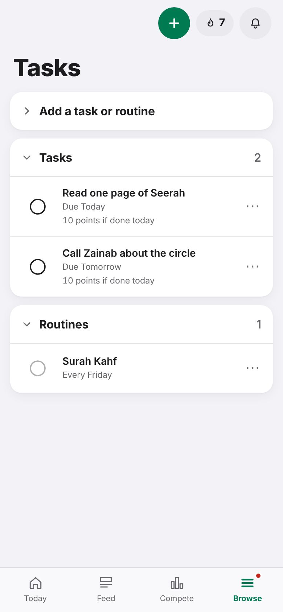
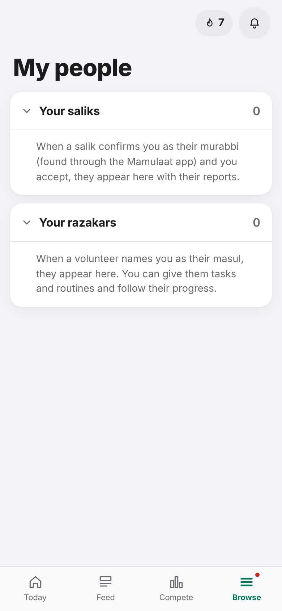

Your account · Tutorial 12 of 13 · 4 min
Tasks, murabbi and masul (Al-Burhan)
For Al-Burhan members:your tasks and routines, and connecting with your murabbi and masul.
These features appear only on the Al-Burhan version of Seerah Quest. If you don't see Tasks and My people in your Browse menu, you can skip this tutorial.
A few words
| Word | Meaning here |
|---|---|
| Murabbi | Your guide, as set in the Mamulaat app. Once linked, they see your full report. |
| Salik | A person a murabbi guides. |
| Masul | The person you volunteer under. They can give you tasks and routines. |
| Razakar | A volunteer under a masul. |
Your tasks and routines
Tap Browse, then Tasks. You see your Tasks (with a deadline) and your Routines (on set days of the week). Tasks due today also show on Today.

To add your own, open Add a task or routine, type it (for example Read one page of Seerah), choose a deadline or the days for a routine, and tap Add.
When it's done, tap the round circle. It fills with a tick. Tapped by mistake? Tap Undo in the message that appears.
On a phone you can also swipe a task to the right to complete it, or to the left to move its deadline.
The ⋯ button holds Move deadline (your own tasks), Ask for more time (tasks from your masul), and Remove.
Points for tasks
- A task from your masul: 30 points. Your own: 10. A routine on its day: 10 from your masul, 5 your own.
- Done late, a task earns less each day late. Each time you push its deadline later, it earns 20% less: a kept commitment is worth more.
Connect with your murabbi
- Go to Browse → Me and find Murabbi and masul.
- Tap Find my murabbi. The app looks up your murabbi in the Mamulaat app using your WhatsApp number.
- Check the name shown. If it's them, tap Yes, connect. Nothing is shared until your murabbi accepts.
Everything: your durood, points, Sunnah, mamulaat, tasks, and your profile including phone and email. Check with them first if you are not sure it is them. Only your murabbi sees your mamulaat.
Add your masul
- In Murabbi and masul on the Me page, search your masul's username.
- Tap their name, then Yes, add. Your masul sees your tasks, routines and general progress, never your mamulaat.
- Tasks they give you appear in your list marked from their name.
If you are a murabbi or masul
Open Browse → My people. Your saliks and razakars are listed here, with requests waiting for you.
Tap a person to open their report. As a masul you can give a razakar a task or routine, and sort razakars into teams with #tags to give a whole team a task at once.
